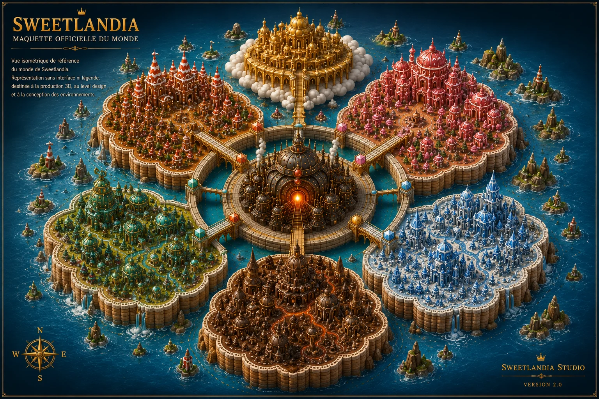
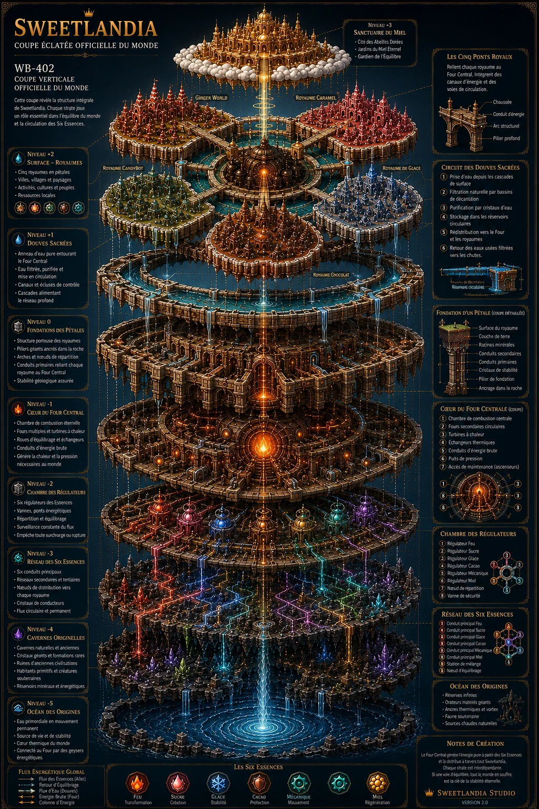

Worldbuilding structuré
Une géographie, des royaumes, des cultures, des artefacts et une chronologie documentés dans une bible de production.
Univers original • En développement
Un monde fantasy gourmand construit comme une propriété créative complète, de la bible d’univers à la bande dessinée, en passant par la création 3D et la fabrication de produits physiques.
Le projet
Sweetlandia est un univers fantasy gourmand organisé autour du Four Central, au cœur d’un monde évoquant une fleur de pain d’épices. Chaque royaume possède sa propre culture, son architecture, ses ressources, ses tensions et son identité visuelle.
Le projet est développé pour devenir une bande dessinée ou un webtoon, tout en restant compatible avec la production d’environnements 3D, de figurines imprimables, d’un artbook et de produits dérivés.
Une géographie, des royaumes, des cultures, des artefacts et une chronologie documentés dans une bible de production.
Une identité familiale, épique, chaleureuse et colorée, pensée pour fonctionner en illustration, BD, 3D et fabrication.
Écriture, recherche visuelle, IA générative, reconstruction sous Blender, optimisation et préparation pour la production.
Le monde
Terre biscuitée, chaude et artisanale, liée au courage, aux fours et aux traditions fondatrices.
Un territoire fluide et raffiné où l’alchimie, la sagesse et la maîtrise des matières occupent une place centrale.
Un royaume technologique où confiserie, mécanique et innovation se rencontrent.
Une région dense et puissante, façonnée par des reliefs profonds et une culture à forte identité.
Un territoire froid et majestueux, essentiel à la première grande quête de Boby Cake.
Un lieu sacré suspendu au-dessus du monde, associé à l’équilibre, à la mémoire et aux forces anciennes.
La démarche
Définition du concept, des thèmes, des personnages, des territoires et des règles de l’univers.
Organisation des informations canoniques, des références, des cartes et des besoins de production.
Exploration rapide de formes, ambiances, architectures et variations, avec sélection et correction humaine.
Recréation, modélisation et mise en scène des éléments destinés aux environnements, aux personnages et aux objets.
Préparation pour la BD ou le webtoon, l’animation, l’impression 3D, l’artbook et les futurs supports.
Sélection visuelle
Cette sélection présente les fondations visuelles publiques du projet. La bible complète reste un document de production interne.



État du projet
Les fondations du monde, la cartographie principale et la direction artistique sont établies. Le développement se concentre maintenant sur la consolidation de la bible, les personnages, les environnements et la préparation du premier format narratif.
Collaboration créative
Sweetlandia illustre ma capacité à relier direction artistique, narration, IA générative, 3D et fabrication.